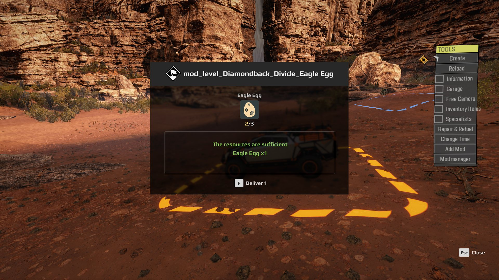
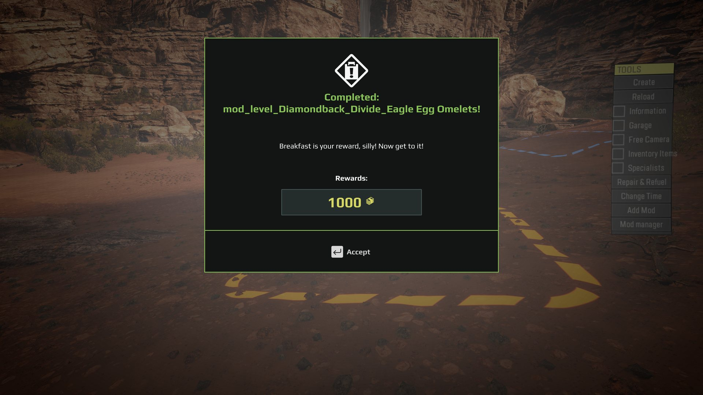

A quest item from start to finish#
This page builds one thing: an item with your own name and your own icon that the player picks up, carries, and hands in to finish a task.
It was run in game on 2026-11-27. The task started, the popup showed the item’s own name and icon, three items were delivered in two trips, the task closed and paid.


Two things to know before you start
Delivery needs a patched game. The stock game can collect a named custom
item but can’t deliver it. The fix is two bytes in initial.pak, and every
player of your map needs it. The patch tool is not released yet. See
Step 6. Without it, end the task with a visit
instead of a delivery.
The task title shows a raw id. On a mod map the title reads
mod_<level>_<task name>, as in the second picture. A fix is being tested. See
What is still open.
The steps#
| Step | What you make | Where it lives |
|---|---|---|
| 1 | An icon | One square picture |
| 2 | A name and an id | Decided on paper |
| 3 | The item mod | Media\Mods\InventoryItemDesc_<id>.pak |
| 4 | A pickup zone that holds the item | The map’s zone settings |
| 5 | The task | The map’s objective settings |
| 6 | The delivery patch | initial.pak |
| 7 | A test run | In game |
Step 1: make the icon#
Start with one square picture of the item on a transparent background. 256 pixels or larger is plenty. Keep the shape simple: the smallest copy is 20 pixels wide.
The game wants four copies:
| File | Size | Where it shows |
|---|---|---|
<key>_20.png |
20 x 20 | Requirements at Headquarters |
<key>_30.png |
30 x 30 | Summary and specialist screens |
<key>_40.png |
40 x 40 | The map |
<key>_60.png |
60 x 60 | The inventory slot and the delivery popup |
<key> is any short name in lower case, such as idol. Save all four as RGBA
PNG, not palettised. A picture that is not square should be padded with
transparent pixels, not stretched.
Step 2: choose the name and the id#
The name is what the player reads: Golden Idol. The id is what the map
files use: Golden_Idol.
Three rules for the id:
- Letters, digits and underscores only. No spaces. The game splits some ids on spaces, and the item can then never be handed in.
- Not an id the game already uses. Two items with one id bind the wrong one, with no error.
- Decide it once. The id is typed into the pickup zone and into the task. A mismatch fails silently.
Step 3: build the item mod#
The mod is a small pak with five files:
InventoryItemDesc_Golden_Idol.pak
InventoryItemDesc the descriptor (JSON, no file extension)
ui/textures/idol_20.png
ui/textures/idol_30.png
ui/textures/idol_40.png
ui/textures/idol_60.png
The descriptor. This is the one from the tested item, with the name changed:
{
"SslType": "InventoryItemDesc",
"SslValue": {
"name": "InventoryItemDesc",
"type": 14,
"baseTypeAbility": 0,
"uiName": "Golden Idol",
"uiDesc": "Old, heavy, and wanted.",
"icon20": "idol_20", "icon30": "idol_30",
"icon40": "idol_40", "icon60": "idol_60",
"iconDesc": null,
"defaultUseCount": 1,
"cost": 0,
"craftRepairsCost": -1,
"craftUseCount": 0,
"recycleRepairsCost": -1,
"isUsable": false,
"isHeavyItem": false,
"isTreasure": false,
"canTakeInHq": false,
"notForSale": true,
"isRequired": false,
"notForCoopDel": false,
"notForDuplicate": false,
"canBeUsedInCave": true,
"hasIconOnMinimap": false
},
"name": "Golden_Idol"
}
What matters here:
typeis14, the general quest item type. A delivery needs a type that has a default item, and 14 has one. A type without one, such as 42, faults when the player presses the deliver key.- The icon fields hold the file names with no folder and no
.png. - The outer
nameis the id. The innernameis alwaysInventoryItemDesc. canTakeInHqisfalse, so the item can’t be bought before the run.
Two ways to make the pak:
- In the editor: EXP MODs creation, File > New Mod > Inventory Item.
Fill in the fields, save, add the four PNGs under
ui\texturesin the mod’s folder, then File > Pack. - By hand: zip the five files with normal (deflate) compression and name the
file
.pak. Mod paks must be compressed. Level paks must not be.
Put the pak in Documents\My Games\Expeditions\Media\Mods and restart the game.
Every field is explained on Custom inventory items.
Step 4: put the item on the map#
The item sits in a loot zone until the player takes it. On the pickup zone, add a
ZonePropertyInventoryStorage property with the item in a slot:
{ "$type": "ZoneItem", "chance": 1.0, "itemName": "Golden_Idol", "type": 14 }
- Add one slot per item the task needs. Three to deliver means three slots.
- Set the zone’s
capacityabove0, or nothing shows. - Give the zone an id with no spaces, or nothing can be taken from it.
You also need the zone the items are delivered to, and for a task, the zone that hands the task out. See Loot, storage and airdrops.
Step 5: build the task#
Use one stage with two jobs in it:
stage[0] ├─ takeInventory optional "Collect the idols"
└─ objectConstruction required "Bring them to camp"
Collecting is optional and delivering is required. A player who already carries the items is then not sent back for more, and the stage still has its one required job. Do not give the collect job a stage of its own as an optional job: a stage with nothing required in it is an error. See Stages and substages.
Both jobs name the item the same way:
{ "$type": "InventoryPack", "count": 3, "invId": "Golden_Idol", "type": 14 }
The collect job, inside the stage:
"takeInventory": {
"$type": "TakeInventoryPackSettings",
"zoneToTakeInvFrom": [{
"$type": "TakeInventorySettings",
"OptionalToPerform": true,
"inventoryToTake": [
{ "$type": "InventoryPack", "count": 3, "invId": "Golden_Idol", "type": 14 }
],
"uiDesc": "Collect three idols from the ruin.",
"zoneGlobalId": { "$type": "ZoneGlobalIdentificator",
"globalZoneId": "<pickup zone>" }
}]
}
The deliver job, in the same stage:
"objectConstruction": {
"$type": "ObjectConstructionPackSettings",
"zoneToFill": [{
"$type": "ObjectConstructionZoneSetting",
"OptionalToPerform": false,
"inventory": { "$type": "InventoryPack", "count": 3,
"invId": "Golden_Idol", "type": 14 },
"inventories": {},
"fuelNum": 0, "repairsNum": 0, "electroNum": 0,
"uiDesc": "Deliver three idols to camp.",
"globalZoneId": { "$type": "ZoneGlobalIdentificator",
"globalZoneId": "<delivery zone>" }
}]
}
Pick the zones in the editor so it writes the full zone id for you. The pieces above show only the fields this recipe changes; leave the rest as the editor writes them.
The reward. Put money on the stage:
"rewards": { "ObjectiveRewardMoney": { "$type": "ObjectiveRewardMoney", "amount": 1000 } }
The tested task carried 1,000 on the stage and 5,000 on the task. The completed screen showed 1,000. Whether the task’s own amount was also paid has not been checked.
The text. The task’s description shows on the completed screen. Each job’s
uiDesc is its line in the task list.
Pack the map. Then check the packed map, not the source: the game reads the pak.
Step 6: patch the game#
The stock game can’t finish a delivery that names an item. When the player presses the key, the game compares your item’s id with a blank id, and the two never match. Nothing happens and no error shows. The full reason is on Custom inventory items.
The patch changes two bytes in initial_release.sslbundle, a file inside
initial.pak:
| Offset in the bundle | Stock | Patched |
|---|---|---|
0x310E6D |
8A |
88 |
0x310E73 |
84 |
86 |
After it, the check tests the item’s type twice and ignores the id. The game still counts and removes items by their real id, so another item of the same type can’t stand in for yours. Stock deliveries use a blank id and behave as before.
Never rebuild initial.pak as a new zip
A rewritten initial.pak crashed the game on load on the test install. The
bundle must be replaced in place, with every other byte of the pak left
exactly as it was. Keep a copy of the stock file first.
Every player needs the patched file. The tool that applies it is not released yet.
Step 7: test it#
- Start the task and collect the items.
- Drive to the delivery zone and open the popup. It should show the item’s own name and icon.
- Deliver.
Reading the popup:
| What you see | What it means |
|---|---|
A counter such as 2/3 |
Delivered so far, out of needed. Not how many are on the truck |
0/3 with the items on board |
Normal. Nothing has been handed in yet |
| The green line “The resources are sufficient” | The truck has something to deliver |
<item> x1 |
How many are on the truck now |
Deliver 1 |
What one key press will hand in |
Part deliveries work. In the test, two items went in first and the counter read
2/3, as in the picture at the top. The third closed the task.
If it does not work:
| Symptom | Cause |
|---|---|
| The key does nothing, popup looks right | The game is not patched |
| The popup shows the wrong item name | The job’s invId is blank, so the game asks for the type’s default item |
| A script fault on the key press | The item’s type has no default item. Use 14 |
| An empty icon slot | The icon files are missing from the pak, or the field names don’t match the file names |
| Nothing to take from the pickup zone | The zone id has a space, or capacity is 0 |
| The task errors on load | A stage has only optional jobs |
What is still open#
- The task title. A mod map shows
mod_<level>_<task name>as the title of every objective. The task has no separate title field. A text file in the map pak, keyed by that full id, did not change it. More tests are under way. - The task-level reward. Not confirmed as paid. Put the money on the stage.
- A required collect job, and collect and deliver as two stages. Only the one-stage form above has been run to the end.
- Two different custom items in one stage.
- Consoles. Whether a patched
initial.pakcan reach them is unknown.